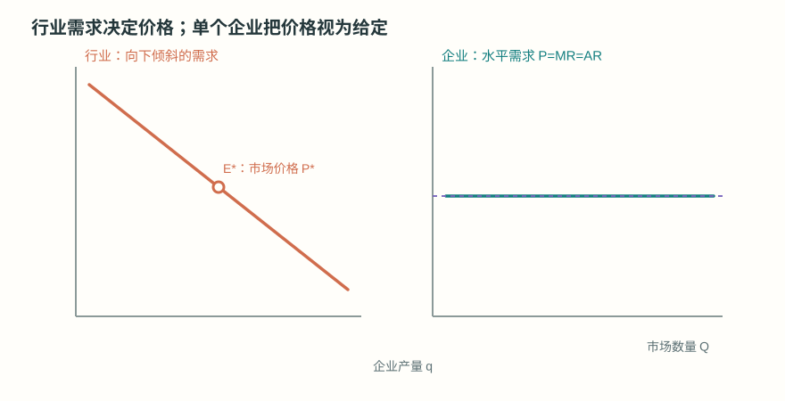

CHAPTER 13 · MICROECONOMICS
完全竞争市场（上）：利润最大化
从价格接受者的水平需求曲线出发，推导利润最大化、短期关停与长期退出的区别。
为什么竞争企业只能接受市场价格？
某个小麦种植户无法因为自己想卖得更贵，就让市场整体提高小麦价格。买家可以转向其他卖家，单个农户的产量相对于整个市场很小。这样的企业被称为价格接受者。但企业层面的水平需求曲线不能代表整个市场：市场需求仍然向下倾斜，行业供需决定均衡价格。
完全竞争是一个基准模型，通常假设有大量买卖双方、产品同质、信息较充分、进入和退出相对自由。现实市场可能只近似满足这些条件；产品差异、运输和搜索成本、品牌、规模与制度都可能让企业获得定价能力。

利润最大化：为什么是 MR=MC？
企业利润等于总收入减总成本。若市场价格 P 已给定，企业生产 q 单位的总收入 TR=Pq。多生产一单位会增加边际收入 MR，也会增加边际成本 MC；只要 MR>MC，增加产量提高利润；当 MR<MC，增加产量降低利润。对平滑、可微且内部最优的解，利润最大点满足 MR=MC。
还要检查二阶条件、产量非负约束和停产选项。对于成本函数的上升段，MC随q增加而上升，MR=MC才对应利润局部最大点。若MC曲线呈U形，可能有两个交点，不能机械地选择较小的那个。
关停点：亏损时为什么仍可能继续生产？
沿用第12章的假设成本函数：FC=32，VC=q³−6q²+15q，MC=3q²−12q+15，AVC=(q−3)²+6。AVC最低点是q=3、AVC=6。若价格低于6，销售收入连可变成本都无法覆盖，继续生产会比停产多亏一部分可避免成本，因此短期应停产。
当P高于最低AVC但低于ATC时，企业仍有经济亏损，却可以覆盖可变成本并分担一部分固定成本；继续营业的亏损可能小于立即停产。停产与退出不是一回事：停产是短期暂时不生产，退出是长期撤离市场并调整所有投入。若固定成本已经不可避免，短期比较只看可避免成本；长期则需重新审视所有投入的机会成本。
把同一成本模型放进价格变化里
本例MC=3(q−2)²+3。对P≥6，取MC=P的上升分支q*=2+√((P−3)/3)；P<6时选择q=0。这个解析式让我们可以核对不同价格下的生产与利润：
| 市场价 P | 最优产量 q | ATC | 利润 π | 决策 |
|---|---|---|---|---|
| 5 | 0 | — | −32 | 停产，承担短期固定成本 |
| 6 | 3 | 16.67 | −32 | 处于关停临界点 |
| 8 | 3.291 | 15.81 | −25.70 | 继续生产，亏损小于停产 |
| 15 | 4 | 15 | 0 | 盈亏平衡 |
| 18 | 4.236 | 15.08 | +12.36 | 获得正经济利润 |
例如P=8时，企业生产约3.291批，利润约−25.70；如果停产，损失固定成本32。继续生产虽然仍亏损，却少亏约6.30。P=18时，产量约4.236批，ATC约15.08，价格高于平均成本，经济利润为正。

交互实验：市场价格变化会怎样改变产量与利润？
竞争企业生产决策器
固定第12章的短期成本函数，只改变外生市场价格。企业无法选择价格，只能选择产量或停产。
P=18，q≈4.236，利润≈12.36，企业获得正经济利润。
当P低于min AVC=6时停产；在P=6处停产与生产q=3的短期亏损相同。
若市场价从8降至5，为什么企业不应该继续按MR=MC交点生产？
查看解析
在P=5时，价格低于最低AVC=6，生产无法覆盖可变成本。即使存在MC=P的交点，生产仍比停产多亏可避免的变动成本，因此最优短期决策是q=0。
参考资料与模型边界
资料用于核对概念定义和推导条件。本章数值均为明确标注的教学假设，图解独立绘制。